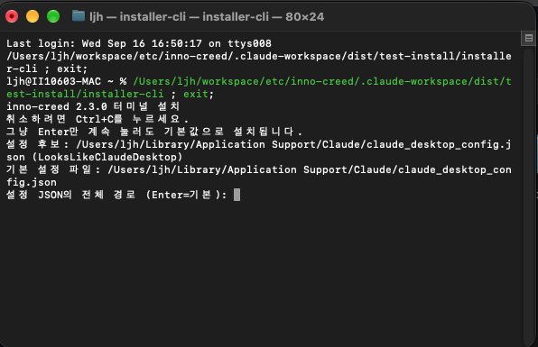

설치 프로그램 창이 안 뜨는 컴퓨터를 위한 예비 경로입니다. 하는 일은 창으로 하는 설치와 완전히 같습니다 — 보이는 모습만 글자일 뿐입니다.
installer-cli를 실행하면 아래 같은 글자 화면이 나옵니다.
(installer가 아니라 installer-cli입니다.)
실행하는 법 — Mac: 폴더에서 installer-cli를 더블클릭하면 터미널이 열리면서 실행됩니다.
Windows: installer-cli.exe를 더블클릭하면 검은 창이 열립니다.
Linux: 터미널에서 그 폴더로 이동해 ./installer-cli를 실행합니다.
payload 폴더와 같은 자리에 둔 채로 실행해야 합니다. 옮기면 설치할 파일을 찾지 못합니다.
Mac에서 "열 수 없음"으로 막히면 한 번만 허용해 주면 됩니다 — macOS 첫 실행 허용하기를 따라가세요(창으로 하는 설치와 같은 절차입니다).
순서대로 나옵니다. 각 칸의 Enter가 무엇을 고르는지만 알면 됩니다.
inno-creed 2.3.0 터미널 설치
취소하려면 Ctrl+C를 누르세요.
그냥 Enter만 계속 눌러도 기본값으로 설치됩니다.버전과 함께, 언제든 Ctrl+C로 그만둘 수 있다고 알려줍니다. 여기까지는 보기만 하면 됩니다.
설정 후보: /Users/…/Claude/claude_desktop_config.json (LooksLikeClaudeDesktop)
기본 설정 파일: /Users/…/Claude/claude_desktop_config.json
설정 JSON의 전체 경로 (Enter=기본):Claude Desktop의 설정 파일을 스스로 찾아 기본값으로 잡아둡니다. Enter를 누르면 그것을 씁니다.
괄호 안의 LooksLikeClaudeDesktop은 "열어보니 Claude Desktop 설정이 맞다"는 뜻입니다 — 좋은 신호입니다.
다른 파일을 쓰려면 그 전체 경로를 입력하세요. 파일을 못 찾았다고 나오면 Claude Desktop을 설치하고 한 번 실행한 뒤 다시 시도하면 됩니다(앱이 처음 켜질 때 그 파일을 만듭니다).
기본 설치 폴더: /Users/…/Library/Application Support/inno-creed
다른 위치라면 상위 폴더의 전체 경로를 입력하세요 (그 안에 inno-creed 폴더 사용, Enter=기본):
대상 폴더: /Users/…/Library/Application Support/inno-creedEnter면 그 OS에서 프로그램이 들어가는 표준 위치를 씁니다. 바꾸고 싶으면 상위 폴더의 전체 경로를 넣으세요 — 그 안에 inno-creed 폴더를 만들어 씁니다.
기존 버전: 없음 또는 확인 불가 / 설치할 버전: 2.3.0
설치하시겠습니까? [Y/n]:대문자 Y가 기본이라는 표시입니다 — Enter = 설치. 그만두려면 n을 입력하세요.
이미 깔려 있으면 기존 버전에 그 번호가 뜹니다. 그대로 진행하면 덮어써서 새로 깔립니다(업그레이드도 같은 방법입니다).
Claude Desktop이 켜져 있습니다(창을 닫아도 트레이·메뉴바에 남습니다).
Enter=대신 종료 / s=직접 껐으니 다시 확인 (취소: Ctrl+C):설정 파일을 안전하게 쓰려면 앱이 꺼져 있어야 합니다. Enter를 누르면 종료 요청을 대신 보내고 꺼질 때까지 기다립니다.
아직 Claude Desktop이 켜져 있습니다. 강제로 종료할 수 있습니다(저장하지 않은 작업은 잃을 수 있습니다).
Enter=강제 종료 / s=다시 확인만 (취소: Ctrl+C):그래도 안 꺼졌을 때만 이 물음이 나옵니다. 여기서 Enter는 강제 종료입니다 — 문구가 바뀌어 있으니 확인하고 누르세요.
직접 끄고 싶으면 s를 입력하면 확인만 다시 합니다.
설치 완료: /Users/…/inno-creed/inno-creed
기존 설정 백업: /Users/…/claude_desktop_config.json.bak.1789543861설정 파일은 손대기 전에 백업해 둡니다. 뭔가 잘못돼도 그 파일로 되돌릴 수 있습니다.
확장 프로그램 연결:
1. Chrome: chrome://extensions 를 여세요.
2. 개발자 모드를 켜고 '압축해제된 확장 프로그램 로드'를 선택하세요.
3. 다음 폴더를 선택하세요: /Users/…/inno-creed/extension
4. inno-creed 크레덴셜 브릿지를 켜고 아마란스에 로그인하세요.아마란스 로그인 정보를 Claude로 넘겨주는 다리입니다. 여기서 멈추면 도구는 보이지만 전부 "로그인하세요"만 돌려줍니다. 3번에 적힌 폴더 경로를 그대로 복사해 쓰세요.
화면 그대로 따라가는 안내: 확장 프로그램 설치 방법
🚨 예전에 확장을 올린 적이 있으면 그 항목을 먼저 삭제하세요(같은 확장을 두 벌 올릴 수 없습니다). 그리고 여기서 고른 폴더는 지우거나 옮기면 안 됩니다 — 브라우저가 그 폴더를 계속 읽습니다.
아마란스 로그인 후 인증 진단(doctor)을 실행하시겠습니까? [Y/n]:Enter = 실행입니다. 크레덴셜을 어디서 잡았는지, 아마란스에 실제로 인증이 되는지까지 한 화면으로 보여줍니다. 토큰 값은 출력하지 않으니 그대로 캡처해 공유해도 됩니다.
확장 프로그램을 아직 안 올렸다면 여기서 "인증은 확인되지 않았습니다"가 나오는 게 정상입니다.
확장을 올리고 아마란스에 로그인한 뒤, 나중에 inno-creed doctor로 다시 볼 수 있습니다.
더블클릭으로 실행했다면 "Enter를 누르면 종료합니다"가 마지막에 뜹니다 — 결과를 읽을 시간을 주려는 것이니 읽고 Enter를 누르면 됩니다.
✅ Claude Desktop을 다시 실행하면 채팅·Cowork 탭에서 inno-creed 도구를 쓸 수 있습니다.
installer-cli를 혼자만 다른 곳으로 옮겼을 때 납니다. 압축을 푼 폴더를 통째로 둔 채, 그 안의 것을 실행하세요.
Windows에서 zip을 풀지 않고 안에서 바로 실행했을 때도 같은 증상입니다.
글자만 깨질 뿐 설치는 정상입니다. 그대로 Enter를 눌러 진행해도 됩니다.
보기 좋게 하려면 PowerShell에서 chcp 65001을 먼저 실행한 뒤 .\installer-cli.exe로 실행하세요.
Ctrl+C로 언제든 그만둘 수 있습니다. 설치를 시작하기 전에 멈췄다면 아무것도 바뀌지 않았고, 다시 실행하면 처음부터입니다. 이미 설치됐다면 그냥 다시 실행해 덮어써도 됩니다.
같은 파일을 --uninstall 옵션으로 실행하세요 — 터미널에서 ./installer-cli --uninstall입니다.
이때는 Enter가 "취소"이고, 지우려면 y를 직접 입력해야 합니다.
그쪽이 기본 경로입니다 — 설치 프로그램으로 설치하기를 보세요.